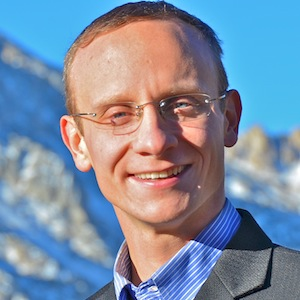
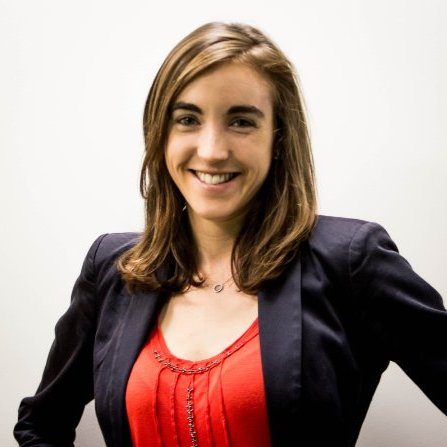
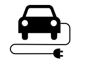
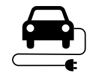
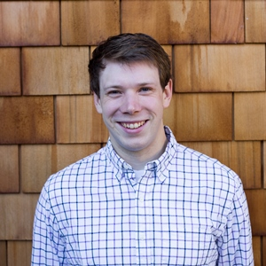
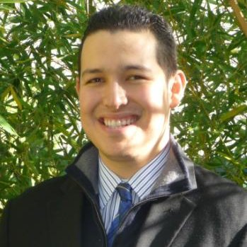
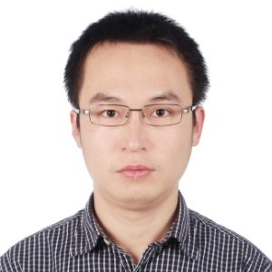
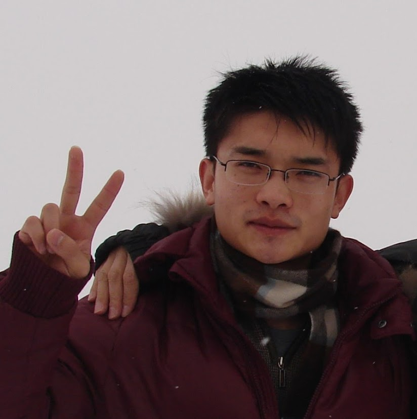
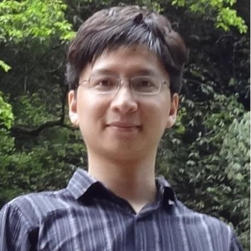
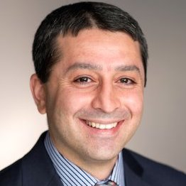

eCAL Alumni
Mission: To achieve leadership, vision, scholarly excellence, and societal impact in energy and controls.
Our students have obtained positions in academia and private industry - all within energy, systems, and automotive sectors. Ex: University of Michigan, Chongqing University, Northrup Grumman Corporation, Google/Nest, Apple, Tesla Motors, Toyota Motor Company, SolarCity, Sunpower, General Electric, AutoGrid, STEM, AMS Microgrid, New Sun Road, Sikorsky Aircraft and more!
WANT TO JOIN? | ALUMNI
Ph.D. Students

Eric Munsing | NSF Graduate Research Fellow
After eCAL @ UCB : Quantitative Researcher at Teza Technologies
Ph.D. Student, Civil & Environmental Engineering - Energy, Civil Infrastructure, and Climate
M.S., UC Berkeley in Civil & Environmental Engineering (2014)
B.S., Olin College in Engineering (2008)
e.munsing@berkeley
 LinkedIn
LinkedIn
 GitHub
GitHub
 Twitter
Twitter
After eCAL @ UCB : Quantitative Researcher at Teza Technologies
Ph.D. Student, Civil & Environmental Engineering - Energy, Civil Infrastructure, and Climate
M.S., UC Berkeley in Civil & Environmental Engineering (2014)
B.S., Olin College in Engineering (2008)
e.munsing@berkeley

Caroline Le Floch, Ph.D. | Siebel Scholar in Energy Science | WTS Helene M. Overly Memorial Graduate Scholar
After eCAL @ UCB : Founder of eCalCharge
Ph.D. Student, Civil & Environmental Engineering - Systems
M.S., UC Berkeley in Civil & Environmental Engineering (2014)
B.S., Ecole Polytechnique, France in Mathematics, Modeling and Optmization (2012)
caroline.le-floch@berkeley
 Google Scholar
LinkedIn
Google Scholar
LinkedIn
 Research Gate
eCalCharge
SolFox
Research Gate
eCalCharge
SolFox
After eCAL @ UCB : Founder of eCalCharge
Ph.D. Student, Civil & Environmental Engineering - Systems
M.S., UC Berkeley in Civil & Environmental Engineering (2014)
B.S., Ecole Polytechnique, France in Mathematics, Modeling and Optmization (2012)
caroline.le-floch@berkeley

Eric Burger, Ph.D.
After eCAL @ UCB : Algorithms Engineer @ Nest/Google
Ph.D., UC Berkeley in Civil & Environmental Engineering - Systems (2017)
M.S., UC Berkeley in Computer Science (2017)
M.S., UC Berkeley in Civil & Environmental Engineering (2013)
B.S., Swarthmore College in Engineering (2012)
eburger1@berkeley
Google Scholar
LinkedIn
Research Gate
GitHub
Wallflower.cc
After eCAL @ UCB : Algorithms Engineer @ Nest/Google
Ph.D., UC Berkeley in Civil & Environmental Engineering - Systems (2017)
M.S., UC Berkeley in Computer Science (2017)
M.S., UC Berkeley in Civil & Environmental Engineering (2013)
B.S., Swarthmore College in Engineering (2012)
eburger1@berkeley

Hector Perez, Ph.D. | Ford Foundation Predoctoral Fellow
After eCAL @ UCB : Systems Engineer, Northrop Grumman Corporation
Ph.D., University of California, Berkeley in Civil & Environmental Engineering - Systems (2016)
M.S.E., University of Michigan in Mechanical Engineering (2012)
B.S., CSU Northridge in Mechanical Engineering (2010)
heperez@berkeley
Google Scholar
LinkedIn
Research Gate
After eCAL @ UCB : Systems Engineer, Northrop Grumman Corporation
Ph.D., University of California, Berkeley in Civil & Environmental Engineering - Systems (2016)
M.S.E., University of Michigan in Mechanical Engineering (2012)
B.S., CSU Northridge in Mechanical Engineering (2010)
heperez@berkeley

Hongcai Zhang, Ph.D.
After eCAL: Postdoctoral Scholar, UC Berkeley
Ph.D., Tsinghua University in Electrical Engineering (2017)
Co-Advised by: Prof. Zechun Hu (Tsinghua University)
& Prof. Yonghua Song (Tsinghua University & Zhejiang University)
B.S., Tsinghua University, China in Electrical Engineering (2013)
zhang-hc13@berkeley
Google Scholar
LinkedIn
Research Gate
 Website
Website
After eCAL: Postdoctoral Scholar, UC Berkeley
Ph.D., Tsinghua University in Electrical Engineering (2017)
Co-Advised by: Prof. Zechun Hu (Tsinghua University)
& Prof. Yonghua Song (Tsinghua University & Zhejiang University)
B.S., Tsinghua University, China in Electrical Engineering (2013)
zhang-hc13@berkeley
Postdoctoral Scholars
Hector Perez, Ph.D.
After eCAL @ UCB : Romeo Power
Ph.D., University of California, Berkeley in Civil & Environmental Engineering - Systems (2016)
M.S.E., University of Michigan in Mechanical Engineering (2012)
B.S., CSU Northridge in Mechanical Engineering (2010)
heperez@berkeley
Google Scholar
LinkedIn
Research Gate
Ph.D., University of California, Berkeley in Civil & Environmental Engineering - Systems (2016)
M.S.E., University of Michigan in Mechanical Engineering (2012)
B.S., CSU Northridge in Mechanical Engineering (2010)
heperez@berkeley

Chao Sun, Ph.D.
After eCAL @ UCB : Assistant Professor of Automotive Engineering at Beijing Institute of Technology
Ph.D., Beijing Institute of Technology in Mechanical Engineering (2016)
B.S., Beihang University in Mechanical Engineering (2010)
chaosun.email@gmail
LinkedIn
Research Gate
After eCAL @ UCB : Assistant Professor of Automotive Engineering at Beijing Institute of Technology
Ph.D., Beijing Institute of Technology in Mechanical Engineering (2016)
B.S., Beihang University in Mechanical Engineering (2010)
chaosun.email@gmail
Satadru Dey, Ph.D.
After eCAL @ UCB : Assistant Professor of Electrical Engineering at University of Colorado, Denver
Ph.D., Clemson University in Automotive Engineering (2015)
M.T., IIT Kharagpur, India in Control System Engineering (2010)
B.T., University of Kalyani in Electronics & Instrumentation Engineering (2008)
satadru86@berkeley
Google Scholar
LinkedIn
Research Gate
Website
After eCAL @ UCB : Assistant Professor of Electrical Engineering at University of Colorado, Denver
Ph.D., Clemson University in Automotive Engineering (2015)
M.T., IIT Kharagpur, India in Control System Engineering (2010)
B.T., University of Kalyani in Electronics & Instrumentation Engineering (2008)
satadru86@berkeley

Xiaosong Hu, Ph.D.
After eCAL @ UCB : Assistant Professor, Chongqing University, China
Ph.D., Beijing Institute of Technology in Mechanical Engineering (2012)
B.Eng., Beijing Institute of Technology in Mechanical Engineering (2006)
xiaosonghu@ieee
LinkedIn
Research Gate
After eCAL @ UCB : Assistant Professor, Chongqing University, China
Ph.D., Beijing Institute of Technology in Mechanical Engineering (2012)
B.Eng., Beijing Institute of Technology in Mechanical Engineering (2006)
xiaosonghu@ieee

Azad Ghaffari, Ph.D.
After eCAL @ UCB : Post-Doctoral Research Fellow, University of Michigan, Ann Arbor
Ph.D., University California of San Diego & San Diego State Univ. (joint) in Engineering Sciences (2013)
M.S., K. N. Toosi University of Technology, Iran in Electrical Engineering (2004)
B.S., K. N. Toosi University of Technology, Iran in Electrical Engineering (2001)
aghaffari@ucsd
Google Scholar
LinkedIn
Research Gate
After eCAL @ UCB : Post-Doctoral Research Fellow, University of Michigan, Ann Arbor
Ph.D., University California of San Diego & San Diego State Univ. (joint) in Engineering Sciences (2013)
M.S., K. N. Toosi University of Technology, Iran in Electrical Engineering (2004)
B.S., K. N. Toosi University of Technology, Iran in Electrical Engineering (2001)
aghaffari@ucsd
Other Former Team Members
Visiting Ph.D.
Leobardo Camacho-Solorio | UC San Diego (2017)Hongcai Zhang | Tsinghua University (2016)
Changfu Zou | University of Melbourne (2015-2016)
Chao Sun | Beijing Institute of Technology (2013 - 2014) [co-advised with Prof. Karl Hedrick]
M.S./M.Eng. Students
Raja Selvakumar (2018)Othmane Benkirane (2015-2016)
PeiDa Guo (2015)
Zoltan DeWitt (2015)
Matt Roeshke (2015)
Tara Schenider (2014-2015)
Simon Han (2014-2015)
Christopher Wiacek (2014-2015)
Oren Lavie (2014-2015)
Undergraduates
Yuting (Tiffany) Wang (2017)Zane Liu (2016-2017)
Elizabeth Chu (2016-2017)
Defne Gun (2014-2016)
Max Morrison (2016)
Preet Gill (2016)
Justin Luke (2015)
Alberto Cucca | Imperial College London (2014-2015)
Othmane Benkirane (2014-2015)
Niloofar Shamohammad (2014)
Cindy Li (2014)
Stephen Moore | Imperial College London (2013 - 2014)
Sam Rounds (2013)
Loan Kim Pham (2013)
Victor Ruiz | UC San Diego (2012 - 2013)
Aaron Stein | Univ. of Michigan (2010)
Visiting Student Researchers (VSRs)
Lea Nicolas | École Polytechnique (2017)Ibrahim Youssef | American University of Beirut (2014)
Florian Fontaine Papion | École Polytechnique (2014)
Khajag Geukjian | American University of Beirut (2014)
Paul-Hervé Tamokoue Kamga | MINES ParisTech (2013)
Philipp Wolf | Univ. of Stuttgart (2012)
Visiting Scholars
Professor Florent di Meglio | MINES ParisTech, Paris, FranceProfessor Xiaohua Wu | Xihua University, Chengdu, China